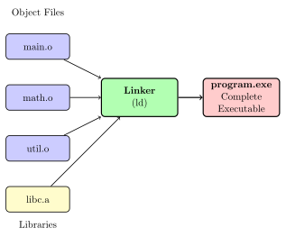
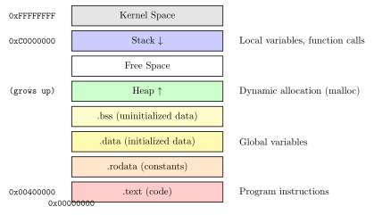
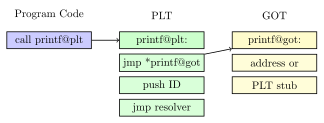

Chapter 5: Linking: Connecting the Puzzle Pieces¶
Linking is the final step in building an executable program. The linker takes object files and libraries, resolves all symbolic references, and produces a complete program ready to run. This chapter explores how scattered pieces become a unified whole.
5.1 The Linker’s Job¶
The linker (ld on Unix systems) performs several critical tasks:
-
Symbol Resolution: Match undefined symbols with their definitions
-
Relocation: Adjust code and data addresses to their final locations
-
Section Merging: Combine sections from multiple object files
-
Library Processing: Include needed functions from libraries
-
Entry Point Setting: Determine where program execution begins

5.2 Symbol Resolution¶
Symbol resolution matches every undefined reference with exactly one definition.
5.2.1 Symbol Types and Binding¶
| Symbol Type | Binding | Description |
|---|---|---|
| Strong Symbol | Global | Functions and initialized globals |
| Weak Symbol | Global | Uninitialized globals |
| Local Symbol | Local | Static functions and variables |
| External Symbol | External | Defined in another file |
5.2.2 Symbol Resolution Rules¶
-
Rule 1: Multiple strong symbols with the same name → Error
-
Rule 2: One strong symbol and multiple weak symbols → Choose strong
-
Rule 3: Multiple weak symbols → Choose any (usually largest)
Solved Problem
Symbol Resolution Examples
Problem: Predict the outcome of linking these files:
// strong.c
int x = 10; // Strong symbol
int y; // Weak symbol
void func() { // Strong symbol
x = 20;
}
// weak.c
int x; // Weak symbol - OK, strong wins
int y = 5; // Strong symbol - OK, was weak
void func(); // External reference - OK
int main() {
func();
return x + y;
}
Solution: - x: Strong symbol from strong.c (value 10, then 20 after func()) - y: Strong symbol from weak.c (value 5) - func: Defined in strong.c, used in weak.c - Links successfully!
But this would fail:
// file1.c
int data = 10; // Strong symbol
// file2.c
int data = 20; // Strong symbol - ERROR! Multiple definitions
5.3 Address Space and Memory Layout¶
The linker arranges the program in memory according to a specific layout:

5.4 Relocation Process¶
Relocation adjusts addresses in the code to reflect the final memory layout.
5.4.1 Two-Pass Algorithm¶
Pass 1: Section Merging and Address Assignment
// Merge sections from all object files
.text_final = merge(main.o:.text, math.o:.text, util.o:.text)
.data_final = merge(main.o:.data, math.o:.data, util.o:.data)
// Assign addresses
text_start = 0x400000
data_start = text_start + sizeof(.text_final)
bss_start = data_start + sizeof(.data_final)
// Build symbol table with final addresses
for each symbol in all_object_files:
symbol.address = section_base + symbol.offset
Pass 2: Relocation Application
for each relocation in all_object_files:
target_addr = symbol_table[relocation.symbol].address
patch_location = section_base + relocation.offset
switch(relocation.type):
case R_X86_64_32:
*patch_location = target_addr
case R_X86_64_PC32:
*patch_location = target_addr - patch_location - 4
// ... other relocation types
Practical Example
Relocation in Action:
Before linking (main.o):
0000000000000015 <main>:
...
1a: e8 00 00 00 00 call 1f <main+0xa> # Placeholder
1f: ...
Relocation entry:
Offset: 0x1a+1 Type: R_X86_64_PLT32 Symbol: add_numbers
After linking (executable):
0000000000401015 <main>:
...
40101a: e8 24 00 00 00 call 401043 <add_numbers>
40101f: ...
0000000000401043 <add_numbers>:
...
The call instruction now has the correct relative offset (0x24) to reach add_numbers.
5.5 Static Linking¶
Static linking copies all required code into the final executable.
5.5.1 Library Archive Processing¶
# Create object files
gcc -c file1.c -o file1.o
gcc -c file2.c -o file2.o
gcc -c file3.c -o file3.o
# Create static library
ar rcs libmylib.a file1.o file2.o file3.o
# Link with library
gcc main.o -L. -lmylib -o program
# Equivalent to:
gcc main.o libmylib.a -o program
# The linker:
# 1. Scans main.o for undefined symbols
# 2. Searches libmylib.a for definitions
# 3. Extracts only needed object files from library
# 4. Includes them in final executable
5.5.2 Link Order Matters¶
Real-World Analogy
Think of linking like following recipe dependencies:
-
You can’t frost a cake before baking it
-
You can’t reference a function before the linker has seen it
-
Libraries should come after the files that need them
# WRONG - library before object that needs it
gcc -lm main.o -o program # math library before main.o
# CORRECT - library after object that needs it
gcc main.o -lm -o program # main.o needs math library
# Multiple library dependencies
gcc main.o -lgraphics -lmath -lbase -o program
# If graphics needs math, and math needs base, this order works
5.6 Dynamic Linking¶
Dynamic linking defers symbol resolution until runtime.
5.6.1 Advantages and Disadvantages¶
| Advantages | Disadvantages |
|---|---|
| Smaller executables | Runtime overhead |
| Shared library updates | Dependency management |
| Memory efficiency | "DLL Hell" potential |
| Plugin architectures | Deployment complexity |
5.6.2 Dynamic Linking Mechanisms¶
Procedure Linkage Table (PLT)¶
The PLT provides lazy binding - functions are resolved on first call:

Global Offset Table (GOT)¶
The GOT holds addresses of global symbols:
# First call to printf
printf@plt:
jmp *printf@got(
pushq $0 # Push symbol ID
jmp .plt0 # Jump to resolver
# After resolution, GOT contains actual printf address
# Subsequent calls jump directly to printf
5.7 The Dynamic Linker/Loader¶
The dynamic linker (ld.so on Linux) runs before main():
1. Kernel loads program and ld.so
2. ld.so gains control before main()
3. ld.so:
- Loads required shared libraries
- Resolves symbols (lazy or immediate)
- Performs relocations
- Initializes libraries
4. Control transfers to main()
Practical Example
Examining Dynamic Dependencies:
# View dynamic dependencies
$ ldd ./program
linux-vdso.so.1 => (0x00007ffd3d5f0000)
libc.so.6 => /lib/x86_64-linux-gnu/libc.so.6 (0x00007f823d200000)
/lib64/ld-linux-x86-64.so.2 (0x00007f823d600000)
# View dynamic symbols
$ nm -D program
U printf@@GLIBC_2.2.5
U __libc_start_main@@GLIBC_2.2.5
0000000000401050 T main
# Trace dynamic linking
$ LD_DEBUG=all ./program 2>&1 | head -20
5.8 Linker Scripts¶
Linker scripts control the linking process in detail:
ENTRY(_start) /* Entry point */
SECTIONS
{
. = 0x400000; /* Start address */
.text : {
*(.text) /* All .text sections */
*(.rodata) /* All .rodata sections */
}
. = ALIGN(0x1000); /* Align to page boundary */
.data : {
*(.data) /* All .data sections */
}
.bss : {
*(.bss) /* All .bss sections */
*(COMMON) /* Common symbols */
}
/DISCARD/ : {
*(.comment) /* Discard comment sections */
}
}
5.9 Common Linking Problems and Solutions¶
5.9.1 Undefined Reference¶
$ gcc main.o -o program
main.o: In function `main':
main.c:(.text+0x15): undefined reference to `add_numbers'
# Solution: Include the missing object file or library
$ gcc main.o math.o -o program
5.9.2 Multiple Definition¶
// header.h
int global = 10; // WRONG - definition in header
// Better:
// header.h
extern int global; // Declaration only
// one_file.c
int global = 10; // Single definition
5.9.3 Library Not Found¶
$ gcc main.o -lmylib -o program
/usr/bin/ld: cannot find -lmylib
# Solutions:
# 1. Specify library path
$ gcc main.o -L/path/to/lib -lmylib -o program
# 2. Set environment variable
$ export LD_LIBRARY_PATH=/path/to/lib:$LD_LIBRARY_PATH
# 3. Install in system directory
$ sudo cp libmylib.so /usr/local/lib/
$ sudo ldconfig
5.10 Exercises¶
Exercise for You
Exercise 5.1: Symbol Resolution Challenge
Given these files, predict what the linker will do:
// strong.c
int x = 1;
int y = 2;
// weak.c
int x;
float y; // Type mismatch!
// main.c
extern int x;
extern float y;
int main() {
return x + (int)y;
}
Compile and link them. What happens? Why?
Exercise for You
Exercise 5.2: Custom Linker Script
Write a linker script that: 1. Places code at address 0x500000 2. Ensures data section is 4KB aligned 3. Creates a custom section for configuration data 4. Defines symbols for section start/end addresses
Test with a simple program that uses these features.
Exercise for You
Exercise 5.3: Dynamic Linking Investigation
1. Create a shared library with three functions 2. Write a program that uses only one function 3. Use LD_DEBUG to observe the linking process 4. Compare PLT/GOT contents before and after first function call 5. Measure the overhead of dynamic vs static linking
5.11 Advanced Topics¶
Advanced Topic
Link-Time Optimization (LTO):
Modern linkers can optimize across compilation units:
# Compile with LTO
gcc -flto -c file1.c -o file1.o
gcc -flto -c file2.c -o file2.o
# Link with LTO - linker can now:
# - Inline functions across files
# - Remove unused code globally
# - Optimize based on whole program
gcc -flto file1.o file2.o -o program
LTO enables optimizations impossible during separate compilation, at the cost of longer link times.
5.12 Chapter Summary¶
Linking transforms a collection of object files into a complete executable:
-
Symbol Resolution: Matches references with definitions
-
Relocation: Assigns final addresses and patches code
-
Section Merging: Combines similar sections from all inputs
-
Static Linking: Creates self-contained executables
-
Dynamic Linking: Defers library binding to runtime
Our simple addition function, compiled in math_utils.o, is finally connected to main() and assigned its permanent address in the executable. The program is now ready to be loaded and run!
Key Takeaway
Key Insight: Linking is where separate compilation’s promise is fulfilled - allowing modular development while creating efficient executables. It’s the bridge between development flexibility and runtime performance.
Next: Chapter 6 - Program Loading: Bringing Code to Life